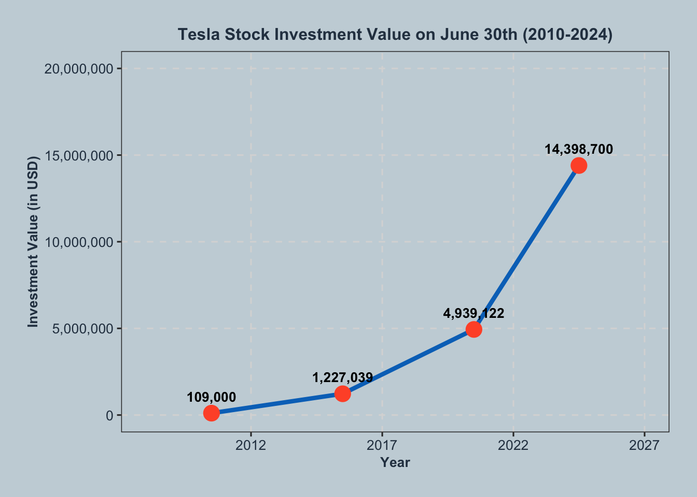

Tesla Stock in 2010 vs. Tesla Car: Which Was the Smarter Investment?
news
website
Author
Nahar Singh Namdhari
Published
October 4, 2024
Thinking Box
What if you had $109,000 in 2010—would you splurge on Tesla’s sleek, high-tech Roadster, or take a chance and invest in their stock? Fast forward to today, and one choice has lost over half its value, while the other could have made you a millionaire. As Tesla went from an underdog to an industry titan, the financial outcomes of these two paths couldn’t have been more different. In this blog, we’ll dive into which decision came out on top.
Introduction
In 2010, Tesla was a relatively new and niche player in the automotive world, having just launched its first electric vehicle, the Tesla Roadster. At the time, the company faced skepticism about its long-term prospects, with many questioning its viability in an industry dominated by traditional automakers. Meanwhile, Tesla’s stock had just been made available through its IPO, seen as a high-risk gamble. This raised a compelling financial question: should you invest in a luxury, innovative car for immediate satisfaction, or take a risk and bet on Tesla’s vision for the future?
Let’s Introduce the data
Data Source
This analysis relies on two primary data sources:
Tesla Stock Data: Retrieved from Yahoo Finance, the dataset includes adjusted closing prices for Tesla stock spanning from 2010 to 2024. This data was used to compute the investment returns over the 14-year period. To ensure its quality, the dataset was thoroughly examined for completeness, covering the entire timeframe. No missing values or outliers were detected during the review process. The data was downloaded by first clicking on “Historical Data,” selecting the desired date range, and then clicking the “Download” button.
Tesla Roadster Depreciation Data: The depreciation data for luxury electric vehicles was sourced from industry-leading platforms, Kelley Blue Book and Edmunds, both recognized for their accuracy and reliability. To ensure consistency, the data was cross-referenced between the two platforms. It was then applied to a standard depreciation model for luxury electric vehicles in R studio.
Variable Description
The dataset consists of the following key variables:
Date: The recorded date of Tesla’s stock price or the Tesla Roadster’s valuation.
Adj_Close: The adjusted closing price of Tesla stock, accounting for corporate actions like stock splits or dividends.
Investment_Value: The changing value of a $109,000 investment in Tesla stock or the depreciation of the Tesla Roadster over time.
Shares_Purchased: The number of Tesla shares that could be bought with $109,000 in 2010 .
Data Cleaning and Preparation Steps
Stock Investment Calculation :
Step 1: Data Source and Retrieval: Downloaded Tesla stock data from Yahoo Finance, ensuring the dataset spans from 2010 to 2024. The historical adjusted closing prices were used for consistency over corporate actions like stock splits and dividends.
Step 2: Handling Missing Values and Outliers: The dataset was reviewed for completeness, with no missing values or outliers detected. This ensured that all data points were present and reliable for accurate stock investment calculations.
Step 3: Filtering Relevant Data: Only the adjusted closing prices were retained from the dataset, as these are the most appropriate values for long-term investment analysis. All other irrelevant variables were excluded from the analysis.
Step 4: Calculating Shares and Investment Growth: Based on the adjusted closing price of $3.84 on June 30, 2010, 28,385 shares were calculated for an initial investment of $109,000. The adjusted closing price was tracked annually to compute the exponential growth of the investment.(see Figure 1). I have attached the code for reproducibility.
Code
# Load necessary librarieslibrary(ggplot2)library(dplyr)library(scales)library(kableExtra)# Read in the datatesla_data <-read.csv("TSLA.csv")# Convert Date column to Date formattesla_data$Date <-as.Date(tesla_data$Date, format ="%d/%m/%y")# Filter data to select June 30th for most years and July 1st for 2024tesla_data <- tesla_data %>%filter((Date ==as.Date("2010-06-30") | Date ==as.Date("2015-06-30") | Date ==as.Date("2020-06-30") | Date ==as.Date("2024-07-01")))# Calculate the value of $109,000 investment in Tesla stockinitial_investment <-109000initial_price <- tesla_data$Adj_Close[tesla_data$Date ==as.Date("2010-06-30")]shares_purchased <- initial_investment / initial_price# Calculate investment value over timetesla_data <- tesla_data %>%mutate(Investment_Value = shares_purchased * Adj_Close)
Tesla Roadster Depreciation Calculation :
Step 1: Data Source and Retrieval: Depreciation data for the Tesla Roadster was sourced from Kelley Blue Book and Edmunds. To ensure consistency and accuracy, data from both platforms were cross-referenced and merged into a single dataset.
Step 2: Depreciation Model Application: A depreciation model was applied to the Roadster’s initial purchase price of $109,000. The first year saw a 20% depreciation, followed by a 10% annual depreciation for the next four years, and a 5% rate thereafter.
Step 3: Calculating Final Depreciation Values: The final value of the Roadster in 2024 was calculated based on this depreciation pattern, stabilizing the value after 2020. The calculation steps were double-checked to ensure accuracy in the depreciation rate application. (see Table 1).
Comparative Analysis: Tesla Stock vs. Tesla Roadster
Tesla Stock Investment
A $109,000 investment in Tesla stock on June 30, 2010, at an adjusted price of $3.84 per share, would have secured approximately 28,385 shares. By June 30, 2024, this investment would have soared in value to $14.39 million, reflecting a staggering return of over 13,000%. Tesla’s meteoric rise from a niche automaker to a global leader in electric vehicles and clean energy illustrates the immense financial rewards of investing early in innovative companies. This 13,000% return underscores the transformative potential of long-term investment strategies, where patience and belief in disruptive technology can result in extraordinary financial gains, as illustrated in Figure 1.

Figure 1: This graph shows the exponential growth of a $109,000 investment in Tesla stock, reaching $14.39 million by 2024, highlighting significant returns over 14 years.
Tesla Roadster Investment
In contrast, the Tesla Roadster, purchased for $109,000 in 2010, followed a typical luxury car depreciation curve. It lost 20% of its value in the first year, 10% annually for the next four years, and then depreciated at a slower rate of 5% per year. By 2024, the Roadster’s value had dropped to under $50,000, representing a decline of over 63% from its original price, as illustrated in Table 1. While the Roadster was a symbol of technological innovation, its financial performance exemplifies the inevitable depreciation of luxury vehicles. This stark contrast highlights the significant disparity in wealth accumulation between an appreciating asset like Tesla stock and a depreciating asset like the car.
Table 1: This table illustrates the depreciation of the Tesla Roadster from its initial value of $109,000 in 2010 to $44,269 by 2024, showing a steady decline in value over time.
Tesla Roadster Value Depreciation Over Time
Date
Value
2010-06-30
109000.00
2015-06-30
57211.92
2020-06-30
44269.49
2024-07-01
44269.49
Conclusion
Roadster to Riches: Tesla’s Financial Evolution
This comparison shows just how different the financial outcomes of these two choices were. While buying the Roadster gave you the thrill of driving a luxury car, it lost more than 60% of its value in 14 years. Meanwhile, Tesla stock skyrocketed, growing by over 13,000% and turning a $109,000 investment into $14.39 million. The lesson? Investing in bold, future-focused companies like Tesla can pay off in ways that go far beyond any luxury car.
These findings underscore the long-term financial benefits of investing in disruptive, future-focused companies like Tesla. The stock’s impressive returns demonstrate how embracing innovation can yield extraordinary financial rewards over time, especially for patient investors willing to take calculated risks. In contrast, the Roadster’s depreciation aligns with the predictable decline typical of luxury goods. Ultimately, this comparison emphasizes that strategic investments in emerging technologies not only offer significant wealth-building potential but also reflect the broader power of innovation in transforming industries.
References
Gründl, H., M. Dong and J. Gal (2016), “The evolution of insurer portfolio investment strategies for long-term investing”, OECD Journal: Financial Market Trends, vol. 2016/2, https://doi.org/10.1787/fmt-2016-5jln3rh7qf46.